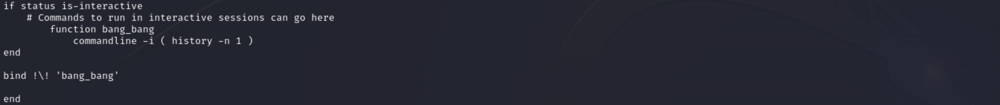

Using Sticky Bits
Use sticky bits to grant write permissions, but not delete permissions. May 20, 2023

The Problem?
Linux permissions are generally pretty straight forward, read, write, execute. But what about if you want users to have write privileges but not delete? That’s what sticky bits are for.
Creating the Repeat “!!” command in Fish
Getting bash functionality from the fish shell, May 14, 2013
The Problem?
If you’ve used the terminal for any amount of time, you’ve probably run a command, only to realize you needed to include sudo. You could always hit the up arrowꜛ and type sudo at the beginning of the line, but you many know that “!!” will repeat the last entry. What about when your old bash trick no longer helps with this task?
Cracking Linux Shadow File Passwords
Red Team fun with the Linux shadow file, May 10, 2023

What can you do if you get your hands on the /etc/passwd and /etc/shadow files?
Some of the most fun IT projects are the red team ones. Let’s see if we can crack weak Linux passwords if we can get our hands on the shadow file.
Linux and Libre Office Spell Check Fix
Correcting Common Spell Check Failures, May 02, 2023

Linux and Libre Office spell check issues are pretty common
Over the last several years daily driving Arch and Debian based Linux operating systems I've enountered many little quirks. One that's occured several times over the last few years is spell check not working. Most recently I encountered this with my Kubuntu 23.04 installation. Everything was working fine when suddenly the Libre Office spell checker ceased functioning. Let's go through 2 possible causes.